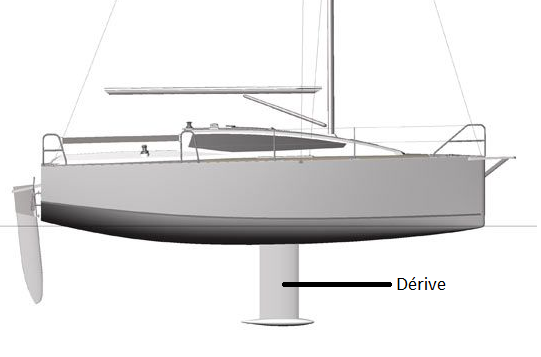
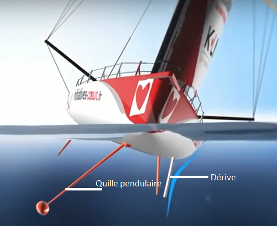
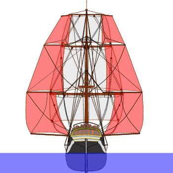
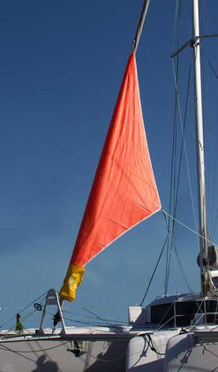
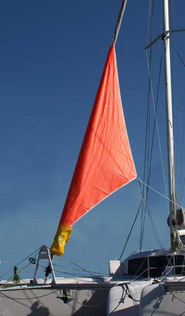
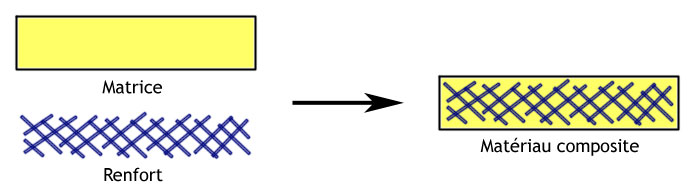
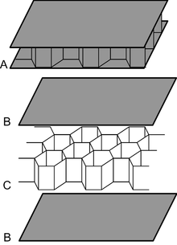

Avec les avancées technologiques de nos jours, les performances des bateaux ne cessent de progresser. Elles sont optimisées en fonction de plusieurs facteurs. Il nous a semblé intéressant de se pencher sur ce sujet et de comprendre l'évolution des différentes techniques. Pour répondre à nos interrogations, nous avons donc posé la problématique suivante :
Problématique :Comment améliorer et optimiser les performances d'un bateau ?
Pour répondre à cette question, nous avons construit un plan autour des principaux composants du bateau notament ceux de la coque, des gréements et des matériaux.
La coque
La coque est une, si ce n'est la partie la plus importante du bateau. Elle assure la flottabilité ainsi que l'étanchéité de l'embarcation. Sa forme et ses composants peuvent complètement changer les performances de celle ci. Nous allons donc voir ici les différents composants de la coque, leur utilité et les matériaux possible pour fabriquer notre coque.

L'hydrodynamisme
L'hydrodynamisme est la science qui étudie les frottements d'un corps dans l'eau. Ici étudier l'hydrodynamique navale nous permettrait de déterminer la forme de la coque, ou encore la carène la plus performante et ainsi répondre au mieux à notre problématique.
Sur le schéma ci-dessus, nous observons le chemin parcouru par l'eau pour "éviter" l'obstacle. Le premier est de forme cubique avec les bords arrondis. Le schéma nous montre qu'une grande partie de l'eau se heurte à la surface plane de l'objet, ce qui le ralenti considérablement comme l'indique la flèche rouge. L'autre objet est de forme ovale et facilite l'écoulement du fluide.
Nous pouvons en déduire que les frottements entre l'eau et l'objet sont plus importants lorsque l'eau se heurte avec une face plane qu'avec une forme arrondie.
Les coques les plus performantes sont donc celles qui facilitent le plus l'écoulement de l'eau.
Les différentes formes de coque
| Formes de coque | Avantages | Inconvénients | Utilisations |
| Coque à fond plat | - Idéale pour naviguer en eau calme, sur des lacs ou étangs | - Inutilisable en eau agitées - stabilité |
Petits bateaux comme des barques pouvant atteindre rapidement de "grandes" vitesses. |
| Coque en V (plat) | - Bonne stabilité à l'arrêt dans un port (au mouillage) - nécessite moins de puissance pour déjauger |
- tape dans les vagues | Se trouve sur des bateaux de plaisance |
| Coque en V (constant) | - navigue convenablement | - nécessite plus de puissance pour déjauger | Se trouve sur des bateaux de plaisance |
| Coque en V (progressif) | - meilleures performances | - moins stable par temps agité | Se trouve sur des bateaux de plaisance |
| Coque ronde | - efficace - perment de glisser sur l'eau |
- vitesse très lente - très peu de stabilité - ne peut pas déjauger |
Se trouve sur les bateaux fluviaux comme des barques. |
La carène est la partie immergée de la coque d'un bateau. Autrement dit, c'est l'ensemble des parties du flotteur qui seront à un moment donné en contact avec l'eau.
Nous allons donc voir dans cette partie les différents types de carène, leur avantages et inconvénients.
Carène à déplacement
La carène à déplacement est basée sur le principe d'Archimède : elle ne déjauge pas et doit alors pousser l'eau pour avancer. Un bateau qui déjauge signifie qu'il s'élève sur l'eau sous l'effet de la vitesse. Cette forme est donc faite pour naviguer dans le confort du fait de sa stabilité. En revanche, elle ne serait pas du tout adaptée pour la vitesse. Cette carène permet de naviguer sur tous les océans, toutes les mers, même par un temps peu favorable. En effet, sa forme lui donne la capacité de ne pas taper dans les vagues. Sa stabilité est due notamment à un fond de coque en V et une quille longue.
Comme dit précedemment, la carène à déplacement ne dejauge pas. Cette propriété empèche le bateau d'atteindre de grandes vitesses et la limite à la vitesse de carène, même avec une motorisation plus importante. Plus le bateau est grand, plus la vitesse maximale sera élevée.

Carène planante
La carène planante est une carène faite pour déjauger. Equipée d'une forte motorisation, elle s'élève au dessus de l'eau avec la vitesse. Une fois déjaugée, la carène planante permet d'atteindre facilement de grandes vitesses car il y a moins de frottements avec l'eau. La carène planante est donc très utile pour les embarquations telles que les bateaux de course.
Cependant, le confort est un sacrifice nécessaire pour augmenter les performances. En effet, en étant déjaugée, la carène tape contre les vagues.

Carène à semi-déplacement
La carène à semi-déplacement, aussi appelée carène semi-planante, a la particularité d'être un compromis entre la carène à déplacement et la carène planante. De ce fait, elle possède un V assez profond sur la partie avant qui s'adoucit progressivement vers l'arrière. Le bateau naviguera donc en position semi-déjaugée. Cette carène possède une bonne tenue de route même dans des conditions météo relativement mauvaises.
On trouve ce type de carène sur les vedettes qui doivent concilier performance et habitabilité.
Comme sur les carènes à déplacement, le fond de coque est équipé d'une quille longue pour améliorer la tenue du cap. Cette carène est donc une bonne alternative entre le confort de la carène à déplacement et les performances de la carène planante.

Les avantages et inconvénients
| Carènes | Avantages | Inconvénients |
| Carène à déplacement | - confort - autonomie - nécessite une faible puissance de moteur |
- vitesse limitée - roulis |
| Carène planante | - peut atteindre de hautes vitesses - peu de trainée donc consomme moins |
- non confortable - nécessite une motorisation performante |
| Carène semi-planante | - bonnes performances sans trop de puissance - confort - peut naviguer sur une mer peu agitée |
- moins rapide qu'une carène planante - sensible au poids |
Le foil est une aile qui permet à un bateau de se déplacer en étant surélevé par rapport à la surface de l'eau. Il favorise l'atteinte d'une grande vitesse de déplacement en minimisant la puissance nécessaire.
Le foil permet d'éviter les frottements de l'eau sur la coque en faisant planer l'embarquation au dessus de l'eau. Cela présente les avantages suivants :
- moins de puissances à fournir
- économie de carburant
- moins de nuisances sonores
Equipés de foils, les voiliers peuvent atteindre des vitesses supérieures à celle du vent !
En revanche, les foils sont des dispositifs moins efficaces et plus complexes à mettre en oeuvre lorsque l'embarcation excède quelques tonnes.

La dérive
Le vent exerce une force perpendiculaire sur les voiles. S'il n'y avait pas de dérives, le bateau avancerait latéralement sous la force du vent. Le but des dérives est donc de garder l'embarcation sur sa route. Sur les bateaux de plaisance, la dérive est fixée sous la coque avec une quille placée à son extrémité. Elle permet à la fois de stabiliser le bateau et d'empêcher la dérive.
Sur les bateaux de course, les dérives sont séparées en deux rôles distincts. On a d'un côté la quille pendulaire qui équilibre le bateau et d'un autre côté les dérives qui créent une force anti-dérive en s'opposant à la force du vent.
 
Bateau de plaisance Bateau de course
Les gréements
Un gréement est l'ensemble du matériel fixe ou mobile, qui permet la propulsion et la manoeuvre d'un bateau par la force du vent. Il comporte les manoeuvres courantes et les manoeuvres dormantes. On appelle espar, les pièces qui composent le gréement.
Les gréements courants ou manoeuvres courantes sont les parties mobiles : bôme, barre de flèche, vergue, écoute, drisse, bastaque...
Les gréements dormants ou manoeuvres dormantes sont les parties fixes : mât, étai, pataras, haubans, barres de flèche...
Barre de flèche : espar servant à raidir le mât avec l'aide des haubans. Plus le mât est grand, plus il y aura de barres de flèche.
Etai : placé à l'avant du navire, c'est un cordage servant à soutenir et à consolider le mât.
Pataras : même rôle que l'étai, il est placé à l'arrière du navire.
Hauban : nom des câbles et cordages qui assurent le soutien latéral des mâts d'un navire à voiles.
Bastaque : hauban mobile qui permet au mât de résister à la poussée des voiles vers l'avant.
Bôme : mât horizontal sur lequel sont fixées certaines voiles.
Vergue : espar placé en travers du mât servant à soutenir une voile.
Ecoute : cordage servant à régler l'angle d'une voile.
Drisse : cordage servant à hisser et à fixer une voile.
Vergue : pièce de bois placée en travers des mâts dans le but de fixer les voiles.
 Guidant ou bord d'attaque : partie de la voile qui fait face au vent.
Guidant ou bord d'attaque : partie de la voile qui fait face au vent. Chute ou bord de fuite : partie à l'arrière de la voile.
Point de drisse : angle au sommet de la voile où est fixée la drisse.
Point d'armure : angle attaché au point fixe du bateau.
Point d'écoute : angle auquel est attaché l'écoute.
Les différentes allures

Le vent arrive de l'arrière du bateau et rend la voile très instable. L'écoulement de l'air sur la voile est perturbé ce qui réduit la vitesse du voilier et entraîne généralement l'empannage. L'empannage est le fait que la voile passe de l'autre côté du bateau.
Le larguele vent souffle à la perpendiculaire sur les voiles et l'écoulement de l'air reste encore perturbé. Cependant, la vitesse est relativement rapide.
Le traversc'est l'allure la plus confortable et la plus rapide. La bateau navigue perpendiculairement au vent.
Le prèsle bateau navigue pratiquement face au vent. Son cap est orienté à 45° par rapport à l'axe du vent. C'est l'allure que le bateau devra adopter pour remonter le vent.
Le vent de facele vent arrive face au bateau. Il est impossible pour le bateau d'avancer sur cette allure. Pour remonter le vent, le bateau devra louvoyer. C'est dire qu'il devra zigzaguer pour être sur le près.

Les différents types de gréements
Le gréement carré
Utilisé dès l'antiquité, c'est le type de gréement le plus ancien. La voile est de forme carrée et est suspendue à une vergue horizontale. Son efficacité est maximale au vent arrière. Le gréement carré ne permet pas de louvoyer de façon efficace. Il est performant sur des vents portants et réguliers mais l'est moins sur les vents irréguliers. Aujourd'hui la voile carrée est rarement utilisée. On peut aussi déployer les bonnettes. Ce sont des petites voiles que l'on ajoute sur les côtés pour gagner en vitesse.


Les bonnettes sont représentées en rouge ci-dessus
Le gréement aurique
La voile aurique est en forme de trapèze et possède quatre côtés. Elle est comprise entre trois espars : le mât à l'avant, la bôme en dessous et la corne au-dessus. La voile aurique recevra toujours le vent par le même bord d'attaque. Il existe différents types de voiles pour le gréement aurique : la voile à corne, la voile au tiers et la voile à livarde. Il faut également savoir qu'un mât est limité à une seule voile de ce type.

Voile à corne :
La voile à corne est uniquement concentrée sur l'arrière du bateau laissant à l'avant, la place pour une autre voile dans le but d'augmenter les performances du bateau comme la vitesse. La voile à corne est plus efficace au largue et tourne toute seule en fonction du vent.

Voile au tiers :
Par rapport au mât, la vergue de cette voile est placée au tiers de sa longueur. L'efficacité de la voile au tiers n'est pas maximale sur une allure en particulier mais a pour avantage d'être polyvalente.

Voile à livarde :
La voile à livarde est assez similaire aux voiles à corne et aux voiles au tiers. Cette voile est caractérisée par un espar nommé "livarde" qui tend et traverse la voile en diagonale.
Le gréement latin
C'est une voile triangulaire qui est enverguée sur une vergue appelée "antenne". Cette voile permet au bateau de se déplacer sur l'ensemble des allures navigables à voile. Elle est principalement utilisée en méditerranée où les vents sont irréguliers.


Voile latine En rouge est représentée l'antenne
Le gréement bermudien
On donne aussi au gréement bermudien le surnom de gréement "Marconi" en raison de sa ressemblance avec les mâts de radio inventés par Guglielmo Marconi (physicien et inventeur italien).
Voici ci-dessous le yacht à vapeur du physicien Marconi nommé "elettra". On aperçoit sur le pont les antennes radio qui pourraient être des mâts.

Ce gréement est originaire des bermudes et est caractérisé par des voiles triangulaires fixées sur des mâts assez hauts. Le point le plus haut de la voile est attaché en tête de mât. Elle est facile d'utilisation. En effet, il suffit d'une seule drisse pour hisser la voile. Elle est polyvalente et présente de bonnes performances au vent de près, c'est pour cela que la voile bermudienne a remplacé le gréement aurique.

Voile bermudienne
Le foc
Le foc est une voile triangulaire qui est hissée le long de l'étai. Ce type de voile est très efficace au près et permet au navire d'augmenter la surface de la voilure. Par conséquent, les capacités du bateau en termes de vitesse seront augmentées. Il existe différents types de focs tels que le génois, le foc, le spinnaker, la trinquette ou encore le tourmentin. Le tourmentin est un foc réalisé en tissu très épais pour résister aux tempêtes.
 
 Spinnaker Tourmentin
Les voiles d'un voilier du vendée globe
Pour l'ensemble de la course, le voilier embarque une dizaine de voiles. Dans le but d'optimiser les performances du bateau, le skipper devra changer de voile en fonction de certaines conditions :
- la force du vent
- l'allure
- conditions météorologiques

La grande voile : C'est la voile la plus utilisée. Normalement, elle est installée tout le long de la course car elle est très polyvalente. Elle peut en effet se régler en fonction de la force du vent. Sa superficie peut atteindre jusqu'à 250m². Elle fait partie du gréement bermudien.
Les focs :En ce qui concerne les focs, la voile la plus utilisée est la J2. Le J signifie "génois" et le numéro indique le point de fixation (il existe aussi des voiles J1 et J3). Ce foc très polyvalent est positionné en permanence sur un étai fixe.
Le voilier possède également d'autres focs tels que le spinnaker, le gennaker, le solent, le tourmentin.
Les matériaux
Pour qu'un bateau soit performant, il faut que les matériaux utilisés pour la coque soient légers et résistants. La voile doit également présenter une bonne élasticité pour éviter sa déformation. En effet, plus le bateau est léger, moins il s'enfoncera dans l'eau. La quantité d'eau déplacée sera alors diminuée et il y aura moins de frottements entre la coque et l'eau. La vitesse du bateau sera ainsi augmentée. Le choix des matériaux est donc primordial !
Les principaux matériaux
| Matériaux | Avantages | Inconvénients |
| Le bois | -léger -pas d'oxydation due aux métaux |
-très peu résistant -difficile d'entretien |
| L'aluminium | -Léger par rapport à l'acier -bonne résistance -métal qui ne rouille pas -longévité |
-électrolyse (décomposition chimique obtenue par le passage d'un courant électrique). Il faut donc être très vigilant sur le circuit électrique du bateau. -coût assez élevé |
| Le matériau composite* | -résistant -faible poids | -sensible aux impacts |
| Fibre de carbone | -solide dans le sens des fibres -très léger |
-coût élevé |
* Le matériau composite est un matériau qui est constitué d'au moins deux éléments. Il permet d'accumuler leurs avantages. Ce type de matériau n'est utilisé aujourd'hui que par les voiliers de compétition. Il est composé d'un renfort et d'une matrice (ou résine) qui sert de liant entre les renforts. Les matériaux principalement utilisés pour le composite sont l'epoxy, le polyester, la fibre de verre et la fibre de carbone. Il est utilisé dans le nautisme, l'automobile ou encore l'aérodynamisme.

Les coques des bateaux de courses
Même si la fibre de carbone est excessivement chère, elle équipe aujourd'hui pratiquement l'ensemble des bateaux de courses. En effet, ses caractéristiques répondent à des critères de performance élevée. Par exemple, la coque des voiliers du Vendée Globe est dite en "sandwich". Il s'agit d'une structure composée d'un "nid d'abeille" situé entre deux couches de fibre de carbone.

La peau du requin
Les requins sont très rapides (le requin mako peut atteindre les 100 km/h). Leurs capacités exceptionnelles s'expliquent en grande partie par les caractéristiques de leur peau.
La peau des requins est en effet constituée d'une multitude de minuscules dents tranchantes (de l'ordre du micromètre), appelées "denticules cutanées". Ces dents miniaturisées dont l'aspect varie en fonction des espèces (forme aplatie, striée ou pointue) forment une surface rugueuse. Contrairement à ce que l'on pourrait penser, cette surface rugueuse offre de meilleures caractéristiques aérodynamiques que les surfaces lisses.
On constate en effet sur la photo ci-contre que l'eau s'introduit dans les microrainures de la peau du requin, créant ainsi des mini tourbillons maintenant l'eau au plus près du corps de l'animal. Ce phénomène appelé "effet riblet" minimise la résistance de l'eau sur la peau du requin.
Certaines entreprises conçoivent des combinaisons de natation professionnelles en s'inspirant de la peau des requins. Grâce à ces combinaisons, de nombreux records mondiaux ont été battus.
Ces denticules ont également inspiré la conception de coques s'appuyant sur l'effet Riblet. C'est le cas de certains bateaux de la coupe de l'America.


Conclusion
Nos recherches nous ont permis de découvrir et de mieux comprendre les caractéristiques et le fonctionnement d'un bateau. Nous avons pu identifier les principaux paramètres permettant d'en améliorer les performances : l'efficacité de la coque, des voiles, et des matériaux utilisés.
Pour obtenir un rendement maximal, il est indispensable de limiter les frottements entre la coque et l'eau. Différentes formes de coque et de carène permettent de gagner en vitesse.
Un foil peut également être ajouté à la coque. Très innovant, cet élément similaire à l'aile d'un avion surélève l'embarcation par rapport au niveau de l'eau, permettant ainsi une meilleure fluidité.
Par ailleurs, la forme des voiles doit être adaptée aux conditions météorologiques et à l'allure du bateau. Il existe pour cela différents types de voile. Certaines sont plus efficaces en termes de vitesse et de polyvalence (plus d'allures navigables).
Pour finir, le choix des matériaux est également essentiel pour obtenir la coque la plus légère et résistante possible. Le matériau qui répond le mieux aujourd'hui à ces critères et qui semble le plus adapté aux bateaux de compétition est la fibre de carbone.
L'ensemble de ces éléments contribuent à la réalisation d'embarcations de plus en plus performantes. On constate d'ailleurs chaque année que les records de vitesse s'améliorent grâce à la technologie et aux innovations.